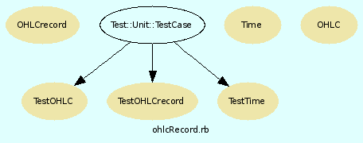

|  |
Tickdaten oder OHLC-Objekte werden jeweils zu einem OHLC-Objekt zusammengefasst.
Bei der Initialisierung wird ein Stock Objekt übergeben. Die dort festgelegte Auflösung wird hier realisiert.
Die Methoden accumulateOHLC und accumulateTicks akkumulieren die Eingangsdaten. Sie akzeptieren jeweils einen Block, dem das erstellte OHLC-Objekt zur Verfügung gestellt wird.
Die OHLC-Objekte werden abhängig von der Eigenschaft ohlcRaster
| variable: | in festen Abständen, beginnend mit dem ersten realen Tick nach Stock.hourStart des ersten Tages |
| fix : | in festen Abständen, täglich beginend bei Stock.hourStart. Die erste Kerze des Tages ist verkürzt. |
| startDay: | in festen Abständen, täglich beginnend mit dem ersten realen Tick nach Stock.hourStart. Die erste Kerze des Tages ist vollständig. |
erzeugt. Im letzten Fall wird die Zeit zwischen Stock.hourEnd und dem ersten Tick des nächsten Tages einfach ignoriert.
Die OHLC-Eigenschaften openDate und date werden wie folgt initialisiert:
| OHLC.openDate: | enthält das fixe Raster der OHLC-Objekte. Diese Eigenschaft ist nicht identisch mit dem ersten tatsächlich registrierten Tick im OHLC-Zeitrahmen sondern mit dem theoretischen Begin dieser Kerze. |
| OHLC.date: | enthält die tatsächliche Zeit des letzten in das OHLC-Objekt integrierten Ticks. |
Die Einträge werden einer Prüfung unterzogen, ob sie sich im akzeptierten Wertebereich des Stock-Objekts befinden (Stock.tickRange und Stock.hourStart / hourEnd)
Nachdem ein OHLC-Element fertig gestellt wurde, wird das Signal ohlc_ready ausgelöst, dem das fertige OHLC-Element mitgegeben wird.
- accumulateOHLC
- accumulateTicks
- get_next_open
- is_daily_close
- is_daily_open
- is_open
- makeOHLC
- new
- raster=
- unfilledOHLC
Parameter
| stock: | Stock-Objekt |
[ show source ]
# File ohlcRecord.rb, line 121 def initialize stock @stock = stock @tickArray= [] @close, @first, @lastTime = nil, nil, nil @ohlcRaster = 'startDay' end
ohlc-Datensätze werden zu einem Master-Datensatz zusammengefasst.
Einsatz z.B. Akkumulation von 1-min-ohlc-Datenblöcken zu einem OHLC-Objekt der Auflösung Stock#resolution.
[ show source ]
# File ohlcRecord.rb, line 181 def accumulateOHLC(ohlc) if ohlc.checkData(@stock) ohlc.adjustDate(@stock) if @first.nil? resetCandleBoundaries(ohlc) elsif is_open(ohlc.date) # war: ohlcOpenDate als Parameter makeOHLC resetCandleBoundaries(ohlc) end @lastTime=ohlc.date @tickArray.push ohlc end end
EinleseMethode für TickDaten
[ show source ]
# File ohlcRecord.rb, line 226 def accumulateTicks(time, price, volume) tickTime=Time.at(time.to_i) # Alle tick-daten vor hourStart verwerfen # Alle tick-daten ohne Volumen verwerfen if tickTime.timeFraction >= hourStart && volume.to_i >0 && price.to_f >= tickRange["min"] && price.to_f <= tickRange["max"] if @first.nil? resetCandleBoundaries(tickTime) elsif is_daily_close(tickTime) # Positions after the "closingBell" are ignored. # Only the value of the 'closing-auction' , the last dataTick of the day, is added to the last candle @tickArray.pop if @close @close=true tickTime=tickTime.adjust2timeFraction hourEnd elsif is_open(tickTime) makeOHLC resetCandleBoundaries(tickTime) else @lastTime=tickTime end @tickArray.push( { :price => price.to_f , :volume => volume.to_i}) # p price end end
[ show source ]
# File ohlcRecord.rb, line 356 def get_next_open convertedResolution - (@lastTime - @first ) end
[ show source ]
# File ohlcRecord.rb, line 335 def is_daily_close(tickTime) tickTime.timeFraction > @stock.hourEnd end
[ show source ]
# File ohlcRecord.rb, line 329 def is_daily_open(tickTime) unless tickTime.nil? tickTime.day !=@first.day || @first.timeFraction < @stock.hourStart end end
[ show source ]
# File ohlcRecord.rb, line 339 def is_open(tickTime) if @ohlcRaster == 'variable' if is_daily_open(tickTime) # # Uebertrag von Vortag mitberuecksichtigen carry=@first.diffFraction( @stock.hourEnd ) todaysTime= tickTime.diffFraction( @stock.hourStart ) (carry + todaysTime ) > @stock.convertedResolution else (tickTime - @first) > @stock.convertedResolution end else is_daily_open(tickTime) || (tickTime - @first) > @stock.convertedResolution end end
Erzeugt ein OHLC-Objekt aus den akkumulierten Daten
Es wird das Signal ohlc_ready ausgelöst
[ show source ]
# File ohlcRecord.rb, line 286 def makeOHLC(clearTickDataArray=true) unless @tickArray.nil? || @tickArray.empty? if @tickArray.first.is_a? OHLC open=@tickArray.first.open close=@tickArray.last.close low=@tickArray.collect{|obj| obj.low}.min high=@tickArray.collect{|obj| obj.high}.max volume=@tickArray.collect{|obj| obj.volume}.sum else # tick-data --> [:price :volume] open=@tickArray.first[:price].to_f close=@tickArray.last[:price].to_f low=@tickArray.collect{|obj| obj[:price].to_f}.min high=@tickArray.collect{|obj| obj[:price].to_f}.max volume=@tickArray.collect{|obj| obj[:volume].to_i}.sum end if volume<=0 price=low=high=open=close else price=@tickArray.collect{|obj| obj[ :price ].to_f * obj[ :volume ] }.sum / volume end # in case of 'variable' ohlc-raster set the start of the day-overlapping candle to hourStart if is_daily_open(@lastTime) && @ohlcRaster == 'variable' @first=@lastTime.adjust2timeFraction hourStart @first -= convertedResolution end @tickArray.clear if clearTickDataArray newOHLC=OHLC.new{ [@first.cutTime(hourStart, hourEnd), @lastTime.cutTime(hourStart,hourEnd), { :open => open, :high => high , :low => low, :close => close , :volume => volume, :price => price} ] } # yield newOHLC if block_given? @close=false # reset the close-flag (used in accumulateTicks) # if count_observers >0 # changed # notify_observers(newOHLC ) # end ohlc_ready newOHLC newOHLC # returnValue end # unless end
Die OHLC-Objekte werden abhängig von der Eigenschaft ohlcRaster
| fix : | in festen Abständen, täglich beginend bei Stock.hourStart. Die erste Kerze des Tages ist verkürzt. |
| startDay : | in festen Abständen, täglich beginnend mit dem ersten realen Tick nach Stock.hourStart. Die erste Kerze des Tages ist vollständig. |
| variable : | in festen Abständen, beginnend mit dem ersten realen Tick nach Stock.hourStart des ersten Tages |
erzeugt. Im letzten Fall wird die Zeit zwischen Stock#ourEnd und dem ersten Tick des nächsten Tages einfach ignoriert.
[ show source ]
# File ohlcRecord.rb, line 153 def raster= value @ohlcRaster= ['fix', 'variable', 'startDay' ].detect{|v| v== value} || 'startDay' end
Erzeugt aus noch nicht verarbeiteten TickDaten ein OHLC-Objekt, verändert die Rohdaten jedoch nicht.
Hiermit kann stets ein Snapshot des aktuellen OHLC-Records abgefragt werden
[ show source ]
# File ohlcRecord.rb, line 256 def unfilledOHLC makeOHLC false end